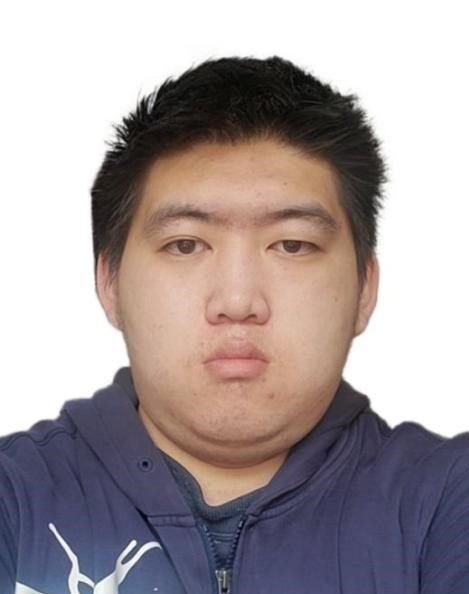
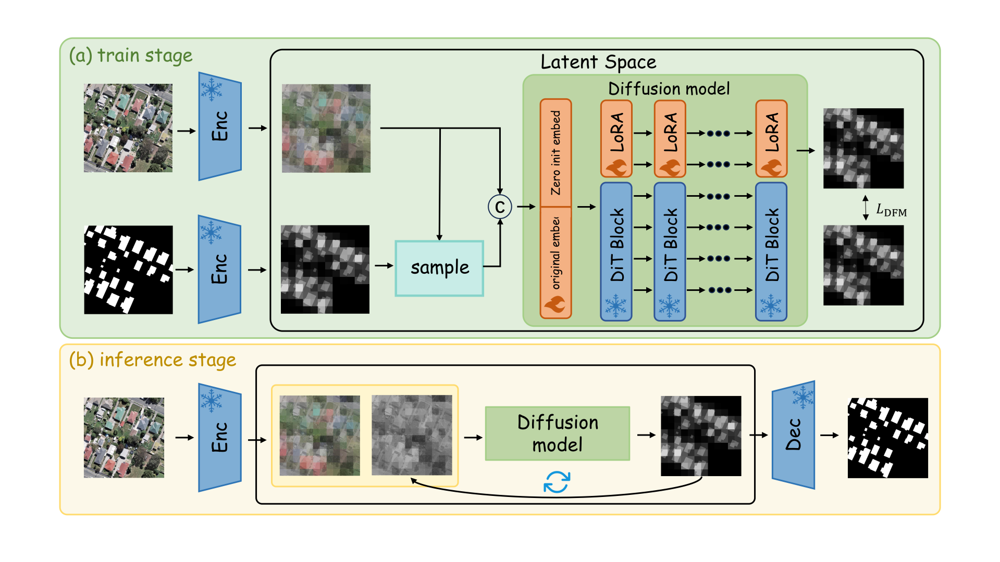

Our paper, BuildFlow, has been accepted by IEEE Transactions on Geoscience and Remote Sensing.
About Me
Taochang Liu
Master's student Guangzhou University
I am currently a master's student at Guangzhou University, advised by Prof. Xinchang Zhang and Dr. Ji Qi. Previously, I received my B.E. degree from Northeast Agricultural University.
My research focuses on generative modeling and multimodal image generation, particularly flow matching and diffusion models for remote sensing imagery.

News
All newsOur paper, RegularFlow, has been accepted by IEEE Geoscience and Remote Sensing Letters.
Selected Publications
All publications
BuildFlow: Rethinking Building Extraction from High-Resolution Remote Sensing Images as Deterministic Continuous Evolution
PaperCode
Abstract
Extracting precise building contours from high-resolution remote sensing images (RSIs) is crucial for understanding urban complexity and economic development. Existing methods struggle to balance pixel-wise accuracy with geometric regularity, particularly under complex backgrounds and shadow occlusion. Revisiting this task via input-conditioned continuous transport, our empirical analysis reveals that the image-to-mask transformation is a staged process: texture suppression followed by boundary recovery, where spatial uncertainty progressively concentrates from global regions to local boundaries. Motivated by these observations, we propose BuildFlow, a deterministic conditional flow-matching framework for building extraction. BuildFlow learns an image-conditioned continuous velocity field in the latent space, progressively evolving the encoded input image toward the target mask via an ordinary differential equation (ODE). To adapt to the observed evolution stages and shifting uncertainty, BuildFlow incorporates three tailored designs. Anchor-based alignment establishes initial global structures during the early texture suppression phase. Source feature injection prevents late-stage semantic drift to resolve local boundary uncertainty and aid precise boundary recovery. Additionally, perturbation-resistant learning improves tolerance to trajectory deviations during deterministic integration. Experiments on WHU, WHU-Mix, and VHIR demonstrate that BuildFlow consistently improves pixel-domain boundary fidelity and polygon-level geometric quality while maintaining competitive region-level segmentation accuracy. On the public WHU benchmark, BuildFlow achieves relative improvements of 3.41% in B-IoU and 9.70% in Vertex F1 over the best competing result for each metric. These results show that modeling building extraction as a deterministic continuous evolution process under input conditioning is an effective way to improve contour quality in complex scenes. Code is available at https://github.com/qwerasdzxhjk/BuildFlow.

RegularFlow: A Deterministic Flow-Matching Framework for Segmenting Regular Man-Made Objects in Remote Sensing Images
PaperCode
Abstract
Roads, buildings, and other regular man-made objects in high-resolution remote sensing images provide essential cues for urban spatial analysis and updates of fundamental geospatial information. However, existing semantic segmentation methods still struggle to preserve boundary regularity and morphological completeness in complex scenes. To address this problem, this paper proposes RegularFlow, a deterministic flow-matching framework for segmenting regular man-made objects in remote sensing images. RegularFlow models the transformation from a remote sensing image to the target mask as a deterministic transport process in latent space and uses a Diffusion Transformer to learn the conditional velocity field. It further introduces a body-boundary collaborative structural constraint, in which body and boundary structure branches guide feature evolution from the complementary perspectives of region completeness and contour regularity, thereby improving the ability of the model to capture the geometric morphology of regular man-made objects. Experiments on the DeepGlobe road dataset and the HaLoBuilding dataset for building extraction demonstrate that RegularFlow achieves the best BF1 on DeepGlobe, HaLo_H, and HaLo_L and competitive or best performance on the remaining metrics. Compared with the second-best method on each task, RegularFlow achieves relative BF1 improvements of 2.50%, 2.32%, and 3.05% on DeepGlobe, HaLo_H, and HaLo_L, respectively, and relative BIoU improvements of 5.10% and 1.75% on DeepGlobe and HaLo_H. Qualitative results further demonstrate that RegularFlow effectively preserves topological continuity and boundary regularity and exhibits strong cross-category adaptability. This study offers a deterministic generative modeling perspective for structured semantic segmentation of regular man-made objects in high-resolution remote sensing images. Code is available at https://github.com/qwerasdzxhjk/RegularFlow.
Research Interests
Generative Modeling
Exploring flow matching and diffusion models for image generation and structured segmentation.
Remote Sensing
Understanding buildings, roads, and other regular man-made objects in high-resolution imagery.
Education
2024 — Present

Guangzhou University
M.S. in Surveying and Mapping Engineering (in progress)
2019 — 2023
Northeast Agricultural University
B.E. in Land Consolidation Engineering
Contact
I am always open to research discussions and collaborations. Please feel free to contact me.
- liutc@e.gzhu.edu.cn